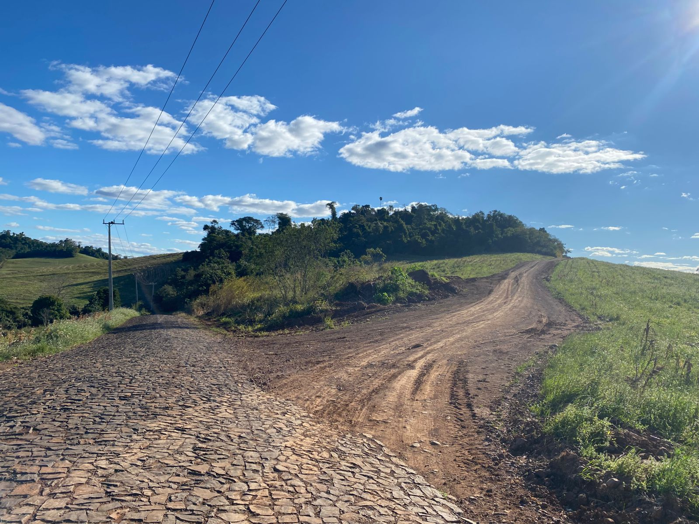
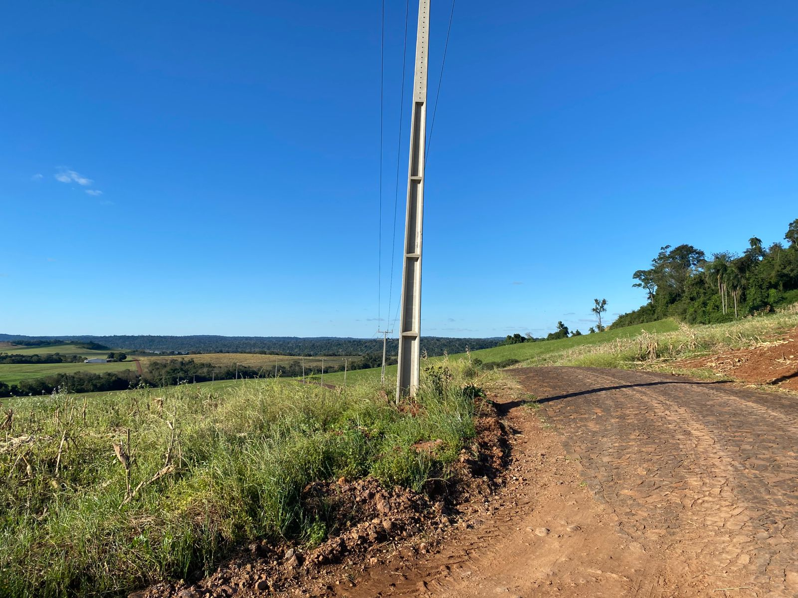

Ponto de Ônibus: Linha Flor Da Serra
Localização:
Flor da Serra, Capanema - PR
Linhas Atendidas:
São Pedro
Centro
Flor da Serra
Santa Ana
Horários de Funcionamento:
Seg a Sex: 05:00 às 18:30
Fotos do Ponto

